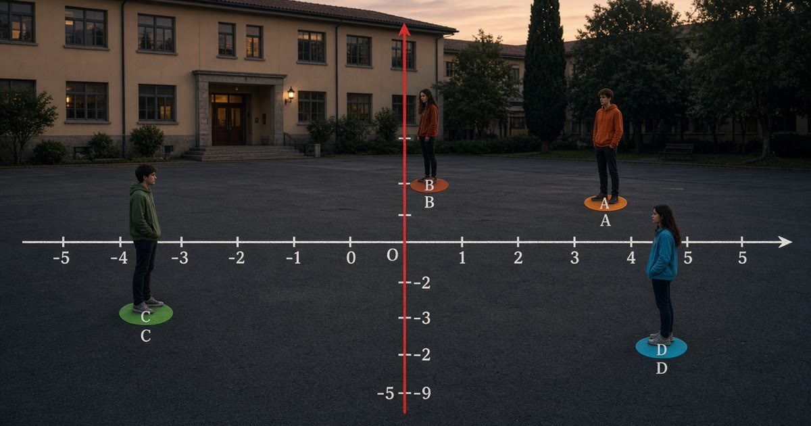

Pubblicato il
Piano cartesiano
Assi, quadranti e i punti A B C D: studio, laboratorio e gioco Collocati.
IIS Ferraris · Acireale · AM
Qui trovi solo i lavori fatti per terza e quarta professionale. Il bollino o indica la classe.
Scegli la classe e attiva gli avvisi.
Controlliamo i nuovi lavori quando apri questa pagina. Su iPhone: Home + notifiche.

Pubblicato il
Assi, quadranti e i punti A B C D: studio, laboratorio e gioco Collocati.
Pubblicato il
Cinque tavole per presentarsi in inglese, con gioco nel cortile.
Pubblicato il
Quattro tavole e un gioco: o’clock, half past, quarter past e quarter to.
Pubblicato il
Scheda, fumetto, gioco in classe e laboratorio sul peso specifico γ.